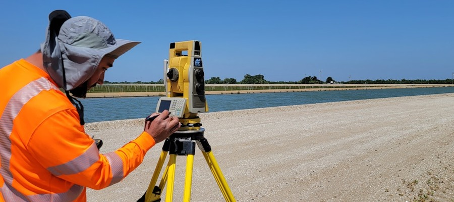

Our systematic approach ensures accurate results and client satisfaction at every stage.

We discuss your project requirements, objectives, and timelines to understand your specific surveying needs. We answer your questions and provide guidance on the most suitable survey type.
Our team visits the property to assess terrain conditions, access points, and identify any potential challenges. We survey the site and prepare for the field survey phase.
Using advanced GPS/GNSS equipment, total stations, and drone mapping, we collect precise measurement data on-site. This is where the detailed technical work happens.
Collected data is processed using specialized surveying software to generate accurate maps, measurements, and computations. We analyze all field data for correctness.
Every survey undergoes rigorous quality checks and peer review to ensure accuracy and compliance with all relevant standards and regulations.
We deliver comprehensive survey reports with maps, documentation, and official certifications. You'll receive both digital and printed copies of your certified survey.
Cutting-edge equipment and software for unmatched precision.
High-precision satellite positioning for millimetre accuracy.
Robotic total stations for precise angle and distance measurement.
Aerial survey and photogrammetry for large-scale projects.
Terrain and structure modeling with laser scanning.
Begin with a free consultation and let us handle the rest.
Request a Site Visit